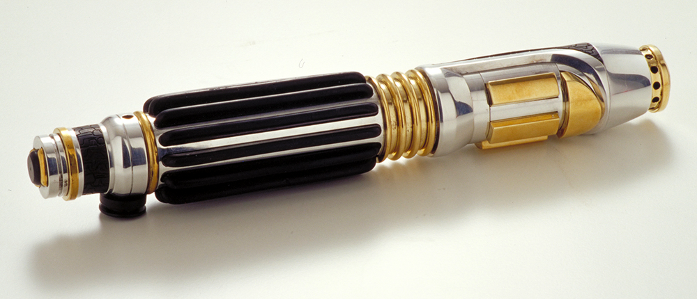

General information
Mace Windu was a male Korun Human Jedi Master of legendary status who was the Master of the Order in the days leading up to the Battle of Geonosis, after which he gave the title to Grand Master Yoda. Hailing from the world of Haruun Kal, Mace Windu served as one of the last members of the Jedi High Council before the Great Jedi Purge. Serving on the Council, Windu was often regarded as second only to the Grand Master Yoda, though Windu was eight centuries Yoda's junior. Windu's wisdom and power were considered legendary by many, as were the weight of his words.
Trained as a Jedi Guardian, Windu was considered to be one of the best swordsmen in the history of the Jedi Order and had created the modern seventh form of lightsaber combat, Vaapad along with fellow Jedi Sora Bulq. He was the only practitioner of the form who did not fall to the dark side. Windu served the Jedi Order his entire life, training several Jedi, including Depa Billaba and Echuu Shen-Jon.
It was Master Windu who led two hundred and twelve Jedi into combat at the Battle of Geonosis and slew the infamous bounty hunter Jango Fett. He continued to serve the Republic throughout the Clone Wars, often on the frontlines of fierce fighting, where he led Republic forces as a High Jedi General. He would distinguish himself across many battlefronts, most notably on Dantooine, though he would distinguish himself on Ryloth, Null, Boz Pity and Haruun Kal amongst others. In the final days of the war, Windu confronted and cornered Darth Sidious in a difficult duel, after being informed by Jedi Knight Anakin Skywalker that Sidious and Supreme Chancellor Palpatine were the same person. He was ultimately betrayed by Skywalker and subsequently killed by Sidious, falling to his death from the window of Sidious's office.
Mace Windu's lightsaber
Mace Windu's lightsaber was a Jedi lightsaber constructed by Jedi Master Mace Windu following his appointment as a senior member of the Jedi High Council. One of the most distinctive lightsabers in the Jedi Order due to its amethyst plasma blade, Windu would carry this weapon into battle on multiple occasions during the Clone Wars in which he served as a Jedi General in the Grand Army of the Republic. The lightsaber was ultimately lost when it fell out a window during a confrontation between Windu and the Sith Lord Darth Sidious, who then killed the Jedi Order's champion through the use of Force lightning.
As one of the most notable members of the Jedi Order, Jedi Master Mace Windu carried a Jedi lightsaber distinguished by its unique amethyst plasma blade. Its distinctive color served as warning to adversaries that the Jedi Order's greatest champion was ready to fight.
Serving as his final lightsaber, Windu constructed it in his youth after many years of experience, and used the highest standards to make a superior weapon. In addition to a specially designed handgrip, the lightsaber's electrum finish indicated Windu's status as a senior member of the Jedi High Council.
Back to home